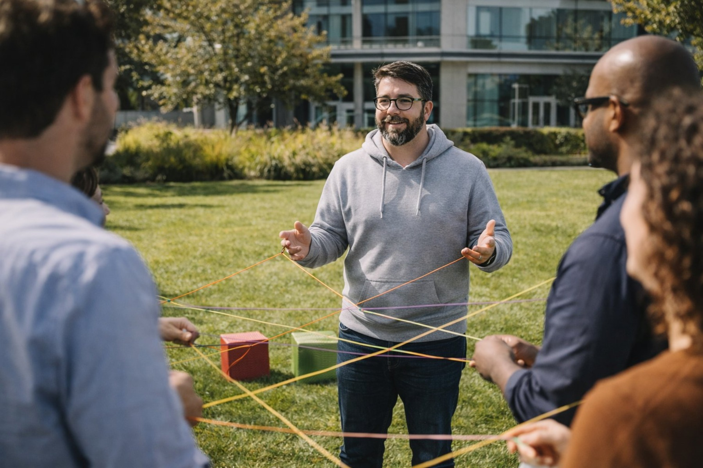
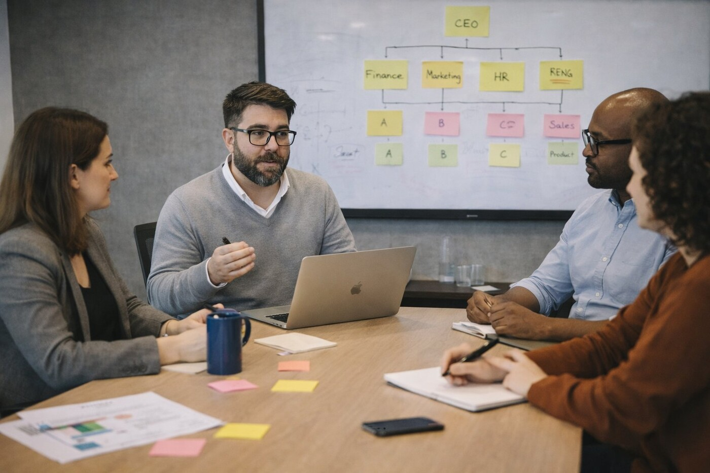
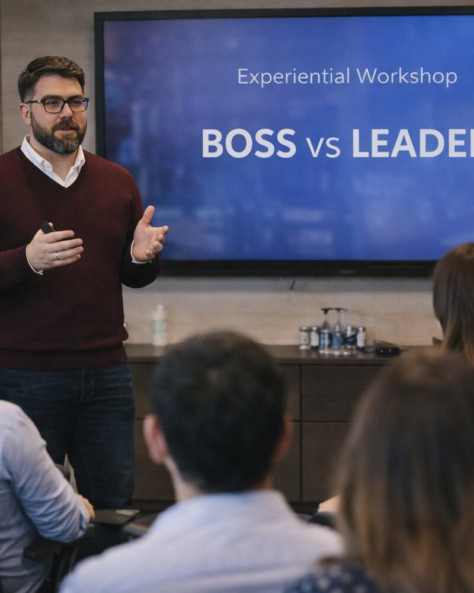

01
Advisory Strategico
Una prospettiva indipendente per decisioni organizzative importanti. Supporto advisory continuativo per CEO, fondatori e team di leadership che navigano crescita, complessità organizzativa e priorità strategiche sulle persone.

Consulente di Sviluppo Organizzativo · Milano, Italia
Una strategia eccellente vale poco senza un'organizzazione capace di realizzarla. Lavoro con CEO, fondatori e team di leadership per allineare come le loro organizzazioni sono progettate, guidate e gestite con ciò che il business deve raggiungere.
Con sede a Milano. Lavoro a livello internazionale.
Esperienza professionale
Le organizzazioni elencate riflettono l'esperienza professionale in diversi tipi di incarichi. La loro inclusione non implica endorsement.
La mia prospettiva
Quando le decisioni tardano, il problema non sono sempre i decision-maker. A volte, nessuno sa chi ha l'autorità per decidere.
Quando la collaborazione si inceppa, la risposta non è necessariamente un altro team-building. A volte, i team vengono ricompensati per inseguire priorità in conflitto.
E quando la cultura inizia a erodersi, riscrivere i valori aziendali serve a poco se le pratiche quotidiane continuano a premiare i comportamenti sbagliati.
È qui che inizia il mio lavoro: comprendere le connessioni tra strategia, struttura, leadership e cultura — e aiutare le organizzazioni a farle funzionare insieme.
Le organizzazioni non performano secondo le loro intenzioni. Performano secondo il loro modo di funzionare.
Competenze
L'efficacia organizzativa non deriva da iniziative isolate. Emerge quando strutture, pratiche di leadership e cultura supportano le stesse priorità di business.
Chiarisci ruoli, diritti decisionali, accountability e modelli operativi perché le persone possano lavorare con maggiore allineamento, autonomia ed efficacia.
Questo comprende la progettazione della struttura organizzativa, framework di accountability, modelli di governance e la traduzione della strategia di business in capacità organizzativa.
Scopri di piùSviluppa leader e team di leadership che prendono decisioni migliori, rafforzano la collaborazione e creano le condizioni per il successo degli altri.
Questo lavoro si concentra sia sull'efficacia della leadership individuale sia sulle dinamiche collettive del team — come i team di leadership pensano e decidono insieme, non solo in parallelo.
Scopri di piùAllinea comportamenti, pratiche manageriali e sistemi organizzativi per sostenere l'evoluzione culturale e il cambiamento significativo.
Il cambiamento culturale raramente riguarda le dichiarazioni dei valori. Riguarda le decisioni quotidiane, i rituali e i meccanismi di rinforzo che rendono un modo di lavorare naturale e un altro difficile.
Scopri di piùAffianca executive e fondatori per sfidare le assunzioni, navigare la complessità e affrontare le decisioni critiche con maggiore chiarezza.
È uno spazio riservato per il pensiero che non avviene nelle riunioni del board — per chiarire cosa conta, cosa ostacola il percorso e che tipo di leader si vuole essere.
Scopri di più
"Diagnosi prima della prescrizione."
Come lavoro
Non credo nel trattare le sfide organizzative come problemi isolati delle persone.
Lo sviluppo della leadership non compenserà un'accountability poco chiara. Le iniziative culturali non supereranno incentivi contraddittori. E un nuovo organigramma non cambierà molto se il processo decisionale rimane lo stesso.
Ecco perché inizio comprendendo come l'organizzazione funziona davvero — non solo come dovrebbe funzionare.
Da lì lavoro insieme ai leader per identificare cosa deve cambiare, tradurre le intuizioni in decisioni pratiche e costruire la capacità interna per sostenere il progresso.
L'obiettivo non è rendere la tua organizzazione dipendente da un consulente. È renderla più capace senza uno.
Chi sono
Sono Fede Fernandez Olivero, consulente di sviluppo organizzativo ed executive coach con sede a Milano.
Ho visto le sfide organizzative da prospettive diverse: come professionista HR, consulente, coach ed educatore. Questa ampiezza mi offre una prospettiva che connette la comprensione organizzativa, le realtà del business e le dinamiche umane in modi che le iniziative separate raramente riescono a fare.
Per oltre 15 anni ho lavorato in Europa e America Latina, supportando organizzazioni e leader attraverso crescita, cambiamento ed esigenze aziendali in evoluzione — dalle multinazionali che navigano trasformazioni su larga scala alle aziende in crescita che costruiscono le proprie fondamenta organizzative per la prima volta.
Quello che ho imparato è che la performance organizzativa raramente migliora semplicemente chiedendo alle persone di lavorare di più o ai leader di impegnarsi di più. Migliora quando prendiamo decisioni migliori su come le organizzazioni sono progettate, come viene praticata la leadership e quali comportamenti i nostri sistemi incoraggiano.
Oggi porto questa prospettiva nel mio lavoro con CEO, fondatori e team di leadership — non per introdurre complessità inutili, ma per aiutarli a costruire organizzazioni capaci di raggiungere ciò che conta.

Modi di lavorare insieme
01
Una prospettiva indipendente per decisioni organizzative importanti. Supporto advisory continuativo per CEO, fondatori e team di leadership che navigano crescita, complessità organizzativa e priorità strategiche sulle persone.
02
Lavoro focalizzato sulle sfide che contano. Incarichi su misura in progettazione organizzativa, efficacia della leadership, cultura e cambiamento — dalla diagnosi al supporto all'implementazione.
03
Uno spazio riservato per pensare, sfidare e crescere. Partnership individuali di coaching per executive e senior leader che navigano transizioni, decisioni complesse e sfide di leadership.
Che tu stia crescendo, trasformando o ripensando il funzionamento della tua organizzazione, sarò felice di esplorare cosa stai cercando di raggiungere.
Una conversazione introduttiva per capire il tuo contesto, esplorare le tue priorità e valutare se lavorare insieme ha senso. Nessun impegno richiesto.
Prenota una conversazione →